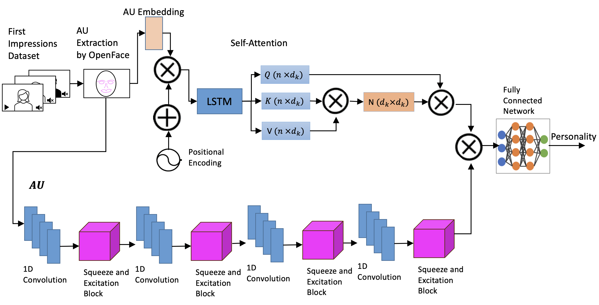
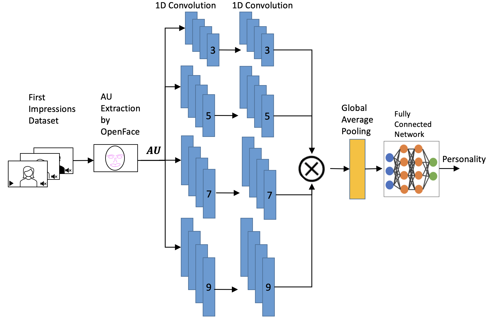

Abstract
In this research, we show the representation of facial expressions, an important component of non-verbal cues. Facial expressions demonstrate aspects like the behavior and personality of a person. Facial vlogging videos focus on audiovisual data for human behavior analysis. Though these datasets contain varied data classes, there needs to be a proper explanation describing the relation between personality and vlogging videos in the sense of algorithmic approaches. The goal is to create a novel and standardized dataset instead of large amounts of video collection of faces, which are raw facial data difficult to access and process for designing a machine learning model. We extract facial action units and context from the facial dataset, ensuring the quality and relevance of the dataset for personality and human behavior-based research purposes. Through this work, we contribute to developing a more effective and usable set of features that equip the models for personality detection and facial expression analysis. This paper automates the process of personality extraction based on facial expressions with good accuracy.
Methodology
Video Collection
The first step in the process is to collect videos that meet specific criteria for personality analysis. Two main factors are considered: the presence of visual aspects of a person speaking and the depiction of a particular personality. Various categories are included to capture diverse personality expressions, such as vlogging, monologues, stand-up comedy, online meetings, lectures, motivational podcasts, and talk shows. Each category highlights unique behavior—vlogging showcases personal storytelling, monologues allow introspection, stand-up comedy offers observational humor, while online meetings, lectures, and podcasts show professionalism and empathy. Talk shows enable engaging conversations. Videos are extracted from YouTube using usernames of selected content creators, with 10 videos per user manually filtered. The final dataset includes 1,500 videos from 180 users, totaling approximately 750 hours.
Action Units
Action Units (AUs) data are extracted from the clips using OpenFace, which allows for frame-by-frame analysis of facial expressions.
Personality Prediction
The personality prediction process uses extracted action units as sequential data, where each frame is represented as an entry in a time-dependent sequence. To capture the sequential nature of this data, a specialized model architecture is used.
Model Architecture
Attention Model
Since the action unit data is sequential, it requires temporal encoding. Each frame is assigned a timestamp through sinusoidal embeddings, providing temporal context to the model. The action units are transformed into a latent space to capture essential features, and the time embedding is concatenated with these action units to highlight temporal patterns. Short-term patterns and long-term relationships are identified using a combination of 1D convolutions and squeeze-and-excitation blocks, which emphasize important temporal information and feature interactions across variables.
To capture long-range dependencies, a combination of LSTM and self-attention layers is used. The LSTM layer models time-series dynamics, while the self-attention module outputs an embedding matrix based on attention weights, enhancing sequence representation by focusing on key parts of the sequence.
Multiscale CNN
The multiscale CNN architecture is used to process time-series data with resilience to noise and time-independent feature identification. This model uses a combination of 1D convolution and pooling layers with varying kernel sizes to capture both short- and long-term temporal features. Initial layers focus on local feature extraction with kernels of different sizes (3, 5, 7, and 9), enabling feature detection at various temporal resolutions. The outputs from these kernels are concatenated, then passed through global pooling and fully connected layers, capturing a range of temporal dependencies essential for accurate personality prediction.
User Study
We demonstrated the relationship between action units and personality traits. Although action units are numerical representations of facial nonverbal cues, we aim to show their resemblance to visual perception. This can be achieved by finding the apparent personality traits which are what a person observes in terms of behavior.
One way to obtain apparent personality is by a manual approach, where people observe the behavioral traits from the videos corresponding to action units. This will let us verify the agreeableness of the personality traits predicted based on action units. To extract the exact personality traits, we streamline the viewer observations using a questionnaire. The determination of OCEAN traits has standard questionnaires used for peer review. In this paper, we are using the BFI, which has items dedicated to each trait. Since the original BFI is longer, we use shorter versions like BFI-10, which has been shown to interpret personality traits effectively for viewer surveys.
Retraining
Retraining the models is essential for adapting to newer data distributions. We implemented incremental learning to continuously update the model without resetting weights. This is particularly useful for online learning use cases with newer data. In our case, the new data from user studies is added to the existing dataset, allowing the model to generalize with both old and new data.
This retraining approach helps in managing concept drift and ensuring the model captures patterns from updated data distributions without overfitting.
Dataset
Action Unites
AU01_r to AU45_r: These columns represent facial action unit intensities, extracted using OpenFace software. Each value ranges from 0 to 1, indicating the level of activation for specific facial muscle movements, such as eyebrow raise, frown, or smile.
ID: A unique identifier assigned to each video. This ID remains consistent across all frames extracted from the same video.
File: The file name associated with each video. All frames from a single video share the same file name, allowing easy tracking of entries from the same source.
Personality Traits (OCEAN)
Extroversion, Neuroticism, Agreeableness, Conscientiousness, Openness: These columns represent scores for personality traits based on the OCEAN (Big Five) model. The values are in discrete steps of 0, 0.25, 0.5, 0.75, and 1, with higher values indicating a stronger presence of that trait.
BibTeX
@inproceedings{kodavati2024iterative,
title={An Iterative Approach to Build a Semantic Dataset for Facial Expression of Personality},
author={Kodavati, Satya Naga Srikar and Kanade, Anish and Hui Mei, Wilhen Alberto and Durupinar, Funda},
booktitle={Proceedings of the 17th ACM SIGGRAPH Conference on Motion, Interaction, and Games},
pages={1--11},
year={2024}
}